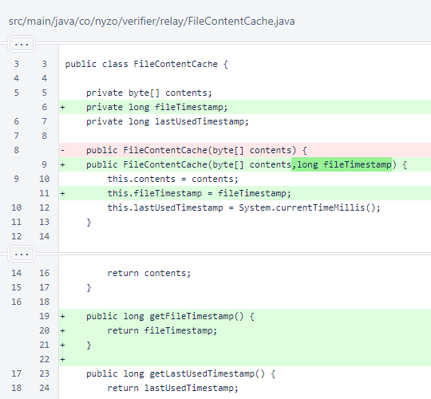
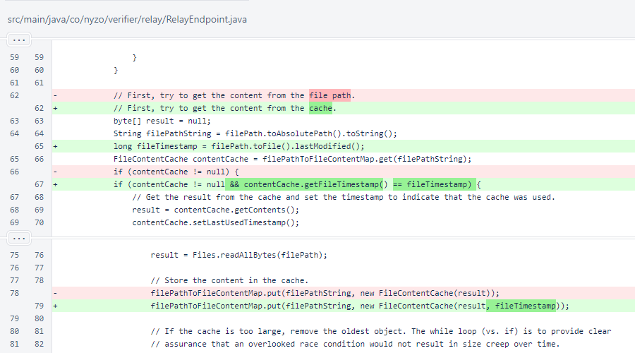

Nyzo 625: relay cache invalidation
Nyzo version 625
(commit on GitHub) adds automatic invalidation of cached files on the relay server based on
file modification timestamps.
This version affects the relay server.
The fileTimestamp field was added to the
FileContentCache class.

In RelayEndpoint, the fileTimestamp is now
considered when checking the cache. A cached response is only used when its file timestamp exactly matches the
current timestamp of the file on the filesystem.
